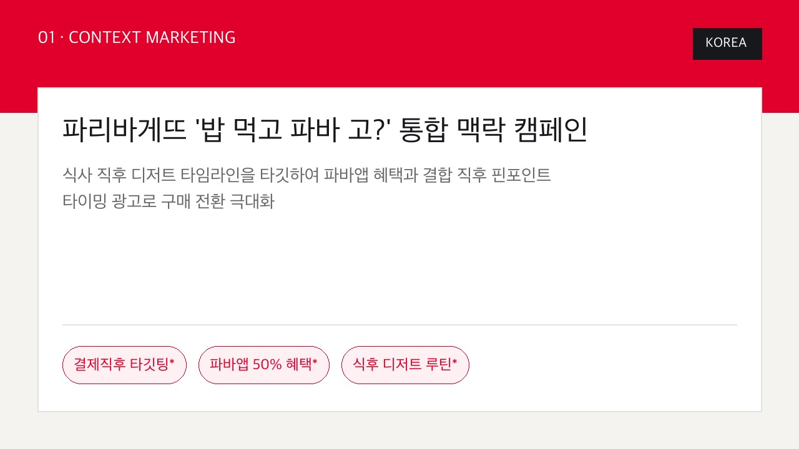
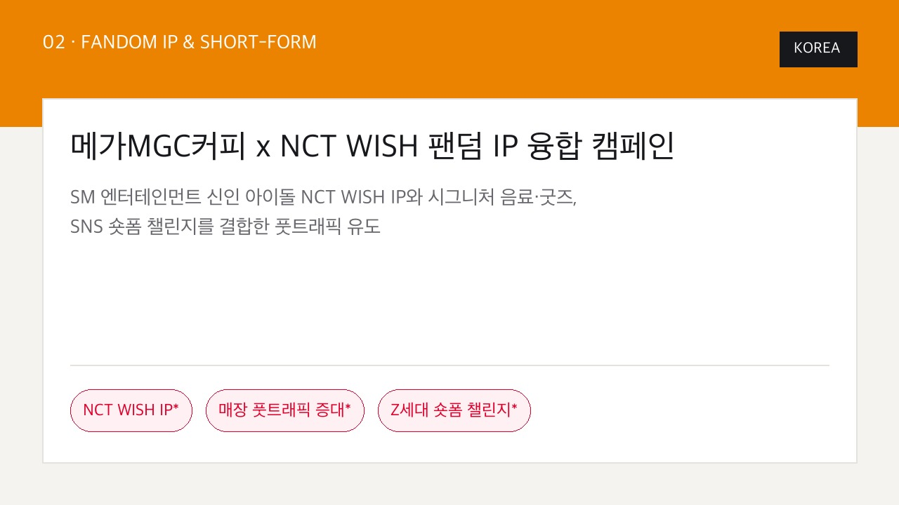
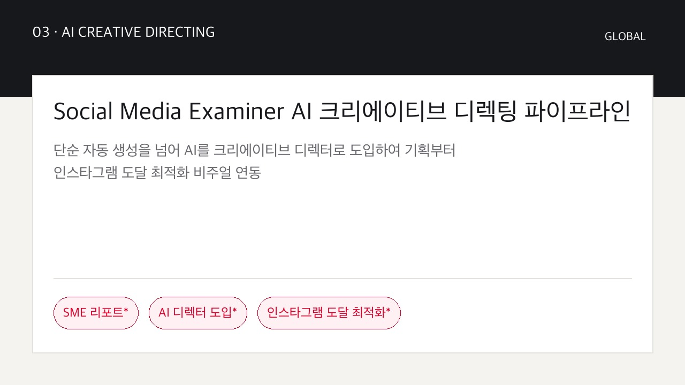
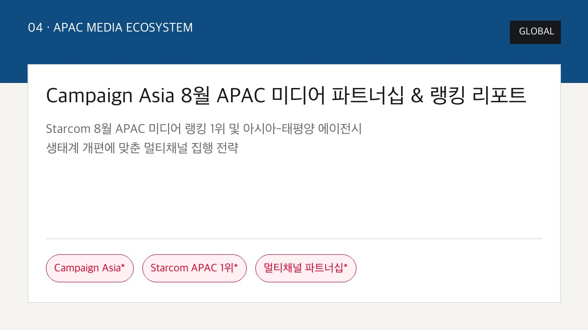
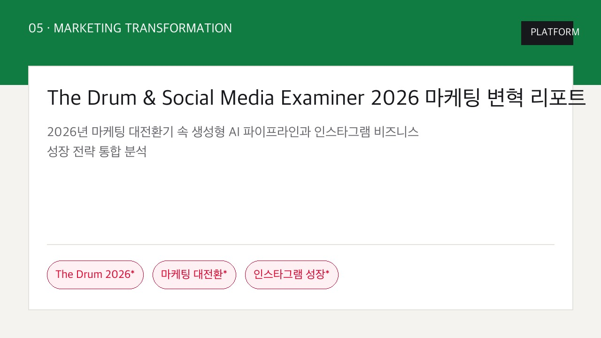
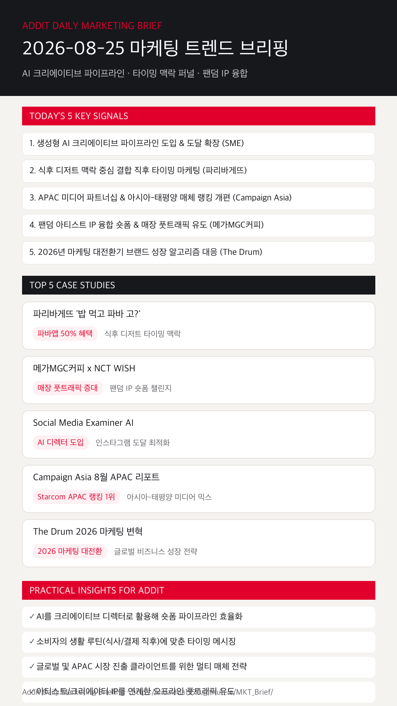

01
생성형 AI를 크리에이티브 디렉터로 활용해 인스타그램 도달을 확장한다
단순 자동 작성을 넘어 기획부터 인스타그램 도달 최적화 비주얼을 일괄 디렉팅하는 AI 파이프라인이 정착했습니다. (SME)
파리바게뜨 식후 타이밍 맥락, 메가커피 x NCT WISH 팬덤 IP, Social Media Examiner AI 디렉터, Campaign Asia APAC 미디어 랭킹 전략을 한눈에 확인합니다.
단순 자동 작성을 넘어 기획부터 인스타그램 도달 최적화 비주얼을 일괄 디렉팅하는 AI 파이프라인이 정착했습니다. (SME)
파리바게뜨 사례처럼 결제 파트너십과 앱 쿠폰을 결합해 구매 전환 확률이 높은 직후 모멘텀을 선점합니다. (OpenAds & Paris Baguette)
Starcom 8월 APAC 미디어 랭킹 1위 탈환 등 글로벌 에이전시들의 미디어 파트너십 론칭이 아시아 시장을 리드합니다. (Campaign Asia)
메가커피 x NCT WISH 협업처럼 팬덤 IP와 브랜디드 릴스 숏폼으로 브랜드 각인과 오프라인 풋트래픽을 동시 달성합니다. (OpenAds & MegaCoffee)
The Drum 리포트에 맞춰 생성형 AI 파이프라인과 인스타그램 알골리즘 변화에 부합하는 소셜 미디어믹스를 수립합니다. (The Drum)

KOREA식사 직후 디저트 타임라인을 타깃해 파바앱 쿠폰과 결제 직후 혜택 광고를 연동해 파바앱 유입과 매장 방문을 직결했습니다.

KOREASM 엔터테인먼트 신인 아이돌 NCT WISH IP를 시그니처 음료 및 SNS 숏폼과 엮어 Z세대의 자발적 매장 방문을 이끌어냈습니다.

GLOBAL단순 자동 생성을 넘어 AI 디렉팅 워크플로우로 기획 아이디어부터 인스타그램 도달 최적화 비주얼을 일괄 제작했습니다.

GLOBAL아시아 주요 시장 대상 멀티채널 매체 집행과 플랫폼 파트너십 론칭으로 글로벌 브랜드의 APAC 확장 성과를 달성했습니다.

PLATFORM지난 5년보다 더 큰 변화를 맞이하는 2026 마케팅 환경에서 AI 크리에이티브 디렉팅과 인스타그램 성장 알고리즘을 융합했습니다.
AI를 단순 보조 도구가 아닌 기획~비주얼 템플릿 일괄 디렉터로 활용해 인스타그램 도달 최적화 파이프라인을 구축합니다.
Social Media Examiner 근거 보기 →파리바게뜨 사례처럼 '식후 디저트/결제 직후' 타임라인을 파악해 파트너십 쿠폰과 결제 핀포인트 광고를 매칭합니다.
OpenAds 파리바게뜨 근거 보기 →Campaign Asia 8월 동향을 바탕으로 글로벌 및 아시아-태평양 시장 진출 클라이언트를 위한 멀티 매체 전략을 제안합니다.
Campaign Asia 근거 보기 →메가커피 사례처럼 대세 아이돌 IP와 숏폼 챌린지를 결합해 Z세대의 자발적 공유와 오프라인 매장 풋트래픽을 높입니다.
OpenAds 메가커피 근거 보기 →The Drum 및 SME 최신 보고서를 반영해 소셜 미디어 알고리즘 변화에 부합하는 타깃 맞춤형 미디어믹스를 수립합니다.
The Drum 2026 근거 보기 →소상공인 5대 AI 활용 실태와 인스타그램 알고리즘 성장 전략 보고서를 확인합니다.
Social Media Examiner 바로가기 →Starcom 8월 APAC 미디어 랭킹 1위와 아시아-태평양 미디어 파트너십 리포트를 분석합니다.
Campaign Asia 바로가기 →
마케팅 성과는 단순 스튜디오 광고의 물량 투입에서 AI 크리에이티브 디렉팅 파이프라인, 생체 루틴 결합 타이밍 퍼널, 팬덤 IP 숏폼의 유기적 조합으로 결정됩니다.
{kind=link}